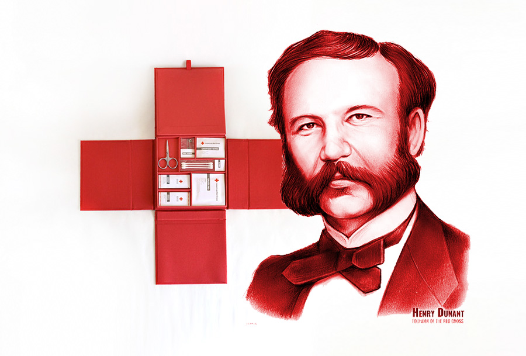

A drawing of Henry Dunant with an early symbol of the Red Cross, for which he is the co-founder.
More About Henry Dunant
- 1828 - Born May 8 in Geneva, Switzerland
(we share a birthday!)
- 1854 - Published the book,
An Account of the Regency in Tunis
- 1863 - The International Committee of the Red Cross is established
- 1864 - The Geneva Convention is signed into an international treaty + the Red Cross emblem is born
- 1867-1875 - Bankruptcy and banishment
- 1875-1895 - Another of his low points:
Living in solitude and eventually settling in hospice
- 1901 - Awarded the very first Nobel Peace Prize alongside Frédéric Passy
- 1903 - Also awarded an honorary doctorate from the University of Heidelberg, among other awards
- 1910 - Died October 30 in Heiden, Switzerland